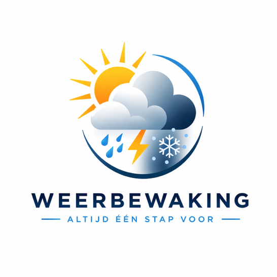

Opgesteld op –
Plaats
VEEL ZON EN AANHOUDEND DROOG
De weersituatie nader beschreven
Voorlopig blijven hogedrukgebieden een stempel drukken op het Nederlandse weer. Vandaag ligt er een hogedrukgebied ten noordoosten van Schotland dat langzaam in betekenis afneemt. De rol van dit hogedrukgebied wordt morgen overgenomen door een hogedrukgebied bij IJsland, dat zich naar de Shetland Eilanden verplaatst en op zondag richting de Noorse Zee trekt. Er komt voorlopig dan ook geen verandering in het huidige weerbeeld.
Vandaag
Morgen
Overmorgen
Op Koningsdag en dinsdag zien we een mix van zon en bewolking en blijft het droog. De maximumtemperatuur bedraagt dan ongeveer 15 graden. Vanaf woensdag krijgt de zon weer helemaal de overhand.